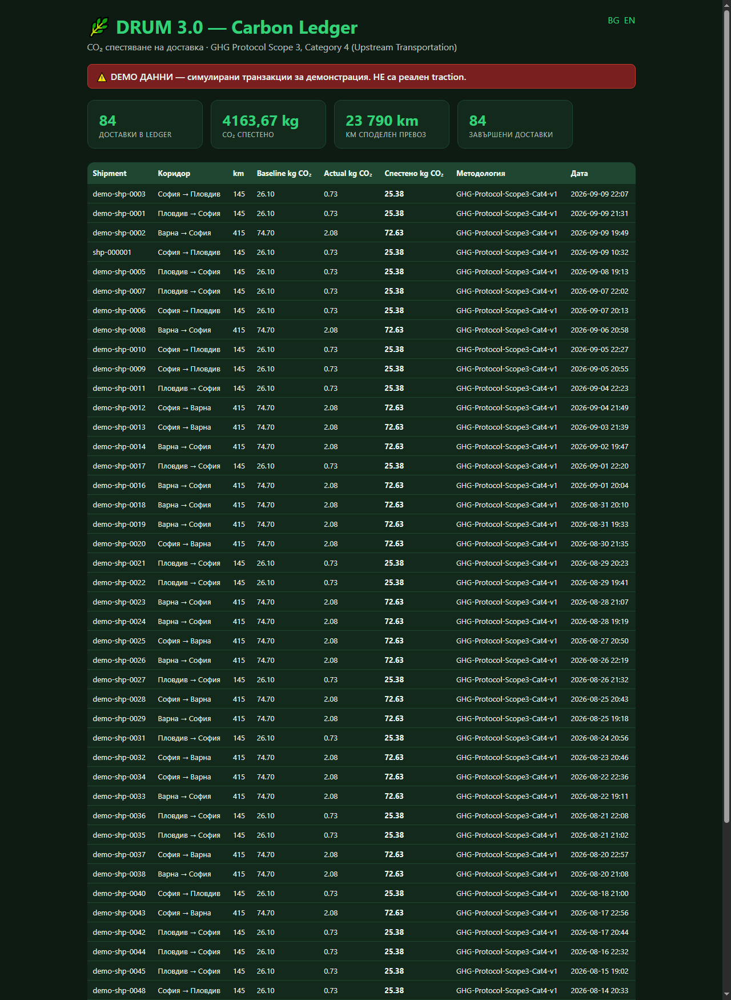
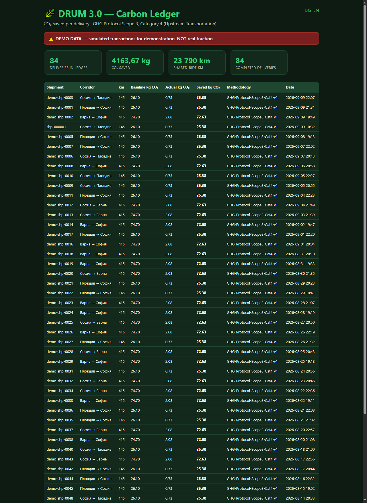
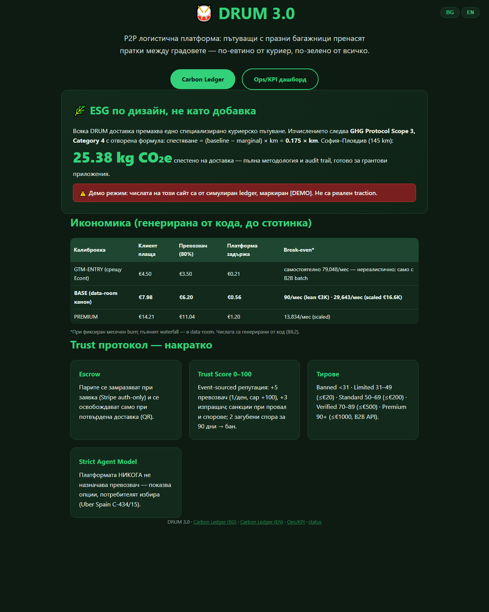
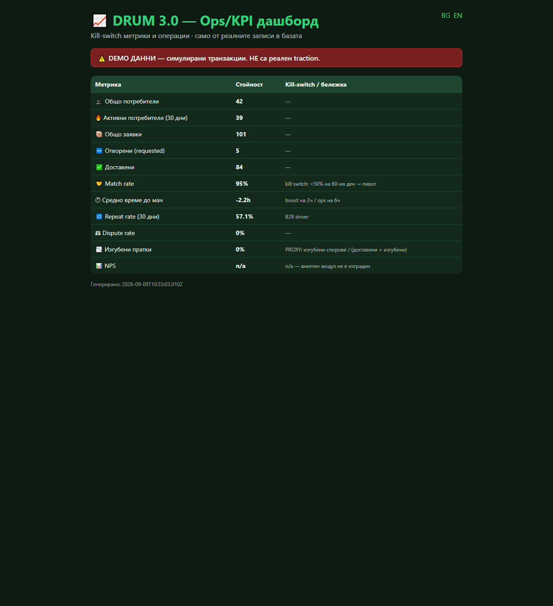

| Проект | DRUM 3.0 — P2P логистична платформа (празни багажници ↔ пратки) |
| Версия | 0.2.0 (канонично репо: drum-mvp → drum-platform) |
| Дата на изготвяне | 2026-09-09 |
| Git commit | 9f07722 (pushнат: master → hristovdimitri2-hub/drum-platform) |
| CI статус | ✅ SUCCESS (GitHub Actions: npm ci → lint → test → coverage gate → demo:e2e → build-financials; run 34340264082, Node 22, ubuntu-latest) |
| Тестове | 99/99 pass · lint чист · coverage gate: money 100% / trust 96.8% / carbon 99.2% / matching 100% |
| Сигурност | Secret scan на цялата история: CLEAN (16+ commits) · private repo · Dependabot alerts ON · secret scanning: изисква Advanced Security (не е налично — документирано) |
| Класификация | За разпространение към потенциални инвеститори. Без ключове, токени, локални пътища или лични данни. |
DRUM 3.0 е P2P логистична платформа, координираща свободен транспортен капацитет — пътуващи с празни багажници пренасят пратки между градовете. Каноничната инсталация (drum-mvp) е работещ софтуер: Telegram бот с пълен потребителски флоу (заявка → escrow → избор на превозвач → QR pickup/delivery → автоматично разплащане), Stripe Connect escrow логика (TEST-only guard), Trust Score система с пълната правилник-таблица от Бизнес план §2.2, Carbon Ledger с GHG Protocol Scope 3 Cat. 4 методология и investor-facing дашборди (BG/EN), Ops/KPI дашборд с kill-switch метрики, B2B batch прототип и data-room с финансов модел, генериран от код.
Присъда (готовност за инвеститори, едно изречение): DRUM е инвестицион- ready като код и методология — всичко обещано в демо-то работи, тествано е (99 теста, CI зелен) и е финансово моделирано с пълна проследимост до стотинка, но има нула реални потребители и доставки — съответно подходящият ask е валидационен (€31K за 90-дневен пилот), не growth капитал.
Пълната карта: docs/VERSION_MAP.md. Резюме:
_archive_v1-v6 и
_archive_3_0; уникалните материали (Financial_Model_SYNCED.xlsx,
Investor Deck, Compendium, Concept_v1) — инвентаризирани и запазени.Легенда: ✅ = РЕАЛНО, тествано · 🟡 = частично · ❌ = не е направено.
SQLite (node:sqlite, нулеви deps), 7 таблици + counters, индекси; facade sqlite/demo/airtable; Postgres път документиран, не имплементиран ❌. Верификация: 6 контрактни теста; чист clone работи без външни услуги.
Пълен флоу: /start → KYC → /new wizard → ops notify → /accept (избор от потребителя) → /scan pickup/delivery → /status, /list, /matches, /evidence, /cancel, /help. Mock adapter: целият флоу тестван headless — интеграционен тест с 8 стъпки. Ограничение: QR „сканиране" = текстов payload (камера → Telegram WebApp: TODO).
Score = 0.4×Trust + 0.3×route + 0.2×history + 0.1×price; ТОП 5; детерминирани tie-break-ове; escalation 2ч boost / 6ч ops. Strict Agent Model: тест забранява assign/dispatch функции и проверява неизменяемост. 10 теста.
+5 носач (1/ден, cap +100) · +3 изпращач (1/ден, cap +60) · −15 неуспех · −50 загубен спор (+БАН при 2 за 90 дни) · +10 KYC · +5 телефон · +10 реферал (referrer ≥80, макс 5) · −10 изоставен · +2 реципрочен (≥3 доставки) · −5 лош рейтинг · −1/мес неактивност (floor 30) · −25 off-platform. Тирове: <31 banned / 31–49 limited (≤€20, 1/седм) / 50–69 standard (≤€200, 10/мес) / 70–89 verified (≤€500) / 90–100 premium (≤€1000, B2B API). 26 теста.
Auth-only escrow → capture → split 80/15/5 в стотинки (каноничен money модул — единствен изчислител); webhook signature verification (тествана); TEST-only guard. Аномалии: 1 amount mismatch · 2 double-capture + webhook idempotency · 3 отказан подпис (24ч photo-proof; DEMO photo = placeholder с метаданни — реално фото: TODO, не е мокнато) · 4 chargeback evidence пакет (едно действие: /evidence или GET /api/evidence/:id; SHA-256, репродуцируем). 6 + 4 теста.
Методология: GHG Protocol Scope 3 Cat. 4; канон saved = 0.175 × km (B6.1 корекция: marginal е абсолютен 0.005 kg/km); audit trail с факторите във всеки запис; worked example; self-verifying ledger тест; VCS-ready export (CSV+JSON); дашборд BG/EN. Carrier waiver — TODO бележка ❌.
Седмичен batch, caps 5/10, broadcast „гарантиран €X, N пратки", dual mode ±€1.50, batch economics (retained €0.43 vs €0.21 при GTM ×10). Симулация 50 заявки: batch 100% match/~84ч vs on-demand 40%/3ч → B7_SIMULATION.md. Ограничение: фиктивни параметри (ASSUMPTION етикети) — прототип.
finance.js = single source of truth (коридорите в /new идват от там).
Waterfall до €0.00 (floor watermark), ДДС 20% само върху таксата (отгоре),
cross-subsidy 15%+5%, break-even стълбица, 3 сценария, B2B batch economics.
Генератор с независима аритметична проверка. Честни находки: BASE цена при
€16.6K burn НЕ покрива burn-а до Y3 (−€145K/год); GTM-ENTRY валиден само с
B2B batch; carbon приход изключен. Сравнение със SYNCED Excel: 6
разминавания документирани (FINANCIAL_NOTES.md), не подравнени.
Kill-switch метрики от реалните записи: match rate, avg time to match, repeat 30d, dispute rate, lost-parcel (PROXY етикетиран), active users; NPS = n/a (честно).
Landing: ESG + икономическа таблица (B8.2) + Trust протокол + линкове. Data room: PITCH.md (12 слайда, [[PLACEHOLDER]] екип/traction), ONE_PAGER.md, RISK_REGISTER.md.
тестовете са редът „Тестове ≥80%" в Етап 4.
Airtable backend (реален, без настроен base); demo-store (legacy); Typeform: схема на полетата; seed-airtable (ръчни link полета).
| # | Какво е чупило | Как е оправено |
|---|---|---|
| 1 | telegraf/session - премахнат модул в Telegraf 4 -> краш при старт | собствен session middleware в bot.js |
| 2 | express липсваше в package.json | добавен като dependency |
| 3 | /new wizard мъртъв (handleTextInput не беше закачен) | закачен чрез bot.on(text) |
| 4 | Stripe webhook: JSON parser преди raw body -> signature verify винаги fail | webhook route mount-нат ПРЕДИ JSON parser |
| 5 | carrierStripeAccountId не се map-ваше от DB -> payout винаги manual | поле + mapping + запис при /accept |
| 6 | Split: 80% от база x 1.2 != документираното 80/15/5 | каноничен money модул: split на captured, remainder 0.00 |
| 7 | Trust праг <30 вместо <31 | изнесено в trust.js, тест за всички граници |
| 8 | /new без cancel бутон | добавена /cancel команда |
| 9 | start.js: Markup без импорт -> краш на реален /start | импорт добавен; хванат от b2 флоу теста |
| 10 | node:sqlite изисква Node >=22.5, CI беше Node 20 | CI + engines bump на 22 |
| 11 | Carbon формула двусмислена (share vs absolute marginal) | B6.1 канон: saved = 0.175 x km + self-verifying тест |
| 12 | VAT-inclusive (0.34) срещу документиран VAT-on-top (0.414) | канон VAT-on-top; старият път премахнат |
| 13 | Coverage data с Windows backslashes не се match-ваше в gate | нормализация на пътищата |
| 14 | ESLint: 11 unused vars (вкл. axios в qr.js, tx в sqlite.js) | изчистени; lint е CI gate |




Терминален изход на demo:e2e (пълен текст: reports/demo_e2e_output.txt):
-- Стъпка 1: Заявка (BASE) --
Ticket T: 7.75 = превозвач 6.20 + такса 1.16 + застраховка 0.39
Клиент плаща: 7.98 (T + ДДС 0.23 върху таксата)
-- Стъпка 2: Escrow --
PaymentIntent: pi_demo_000001 | статус: requires_capture
-- Стъпка 3: /accept -- ПОТРЕБИТЕЛЯТ ИЗБИРА (Strict Agent Model)
Статус: matched | Pickup + Delivery QR генерирани
-- Стъпка 4: Pickup scan -- Статус: picked_up
-- Стъпка 5: Delivery scan -> capture + split 80/15/5 --
Превощач (80%): 6.20 -> transfer tr_demo_000001
DRUM (15%): 1.16 | Застраховка (5%): 0.39
-- Стъпка 6: Trust Score -- Изпращач 50->53 - Превощач 50->55
-- Стъпка 7: Carbon Ledger --
Baseline 26.10 - Actual 0.73 = СПЕСТЕНО 25.38 kg CO2e
Waterfall на доставка: брутно EUR 7.98 (клиент) - превощач EUR 6.20 (80%) - DRUM такса EUR 1.16 - ДДС EUR 0.23 (отгоре) - застраховка EUR 0.39 (пул резерв) - Stripe EUR 0.37 - ПЛАТФОРМА EUR 0.56 (7.2%) - remainder EUR 0.00.
Break-even стълбица (доставки/мес): EUR 50 burn -> 90 - EUR 3,000 -> 5,358 - EUR 10,000 -> 17,858 - EUR 16,600 -> 29,643.
Сценарии (EBITDA, BASE): при EUR 16.6K/мес burn - Y1 -195,840, Y2 -182,400, Y3 -145,440 (при 6K/30K/96K доставки годишно). Честен извод: BASE цена не покрива scaled burn - лостовете са B2B batch (retained 0.43), premium коридори (1.20), lean burn (3K) или комбинация.
B2B batch economics при GTM (T = 4.37): batch x10 - Stripe 0.93 общо (vs 3.20 on-demand), retained EUR 0.43/пратка = 2.06x. GTM-ENTRY е възможен САМО с batch. Симулация 50 заявки: batch 100% match/~84ч vs on-demand 40%/3ч (детерминирана, ASSUMPTION етикети).
Пълните таблици: FINANCIAL_MODEL.md / .csv, B7_SIMULATION.md, FINANCIAL_NOTES.md (6 разминавания със стария Excel, документирани).
git clone https://github.com/hristovdimitri2-hub/drum-platform
cd drum-platform
npm install
copy .env.example .env (Windows; Unix: cp)
npm run seed:demo # 106 [DEMO] доставки + Carbon Ledger
npm run demo:e2e # пълна транзакция: escrow -> QR -> capture -> CO2
npm start # http://localhost:3000
Отчетът е полу-автоматичен: числата идват от кода (services/money, finance, carbon, kpi), скрийншотите са реални headless-заредени страници, терминалният изход е от действителен прогон. Няма ключове, токени, локални пътища с потребителски имена или лични данни.